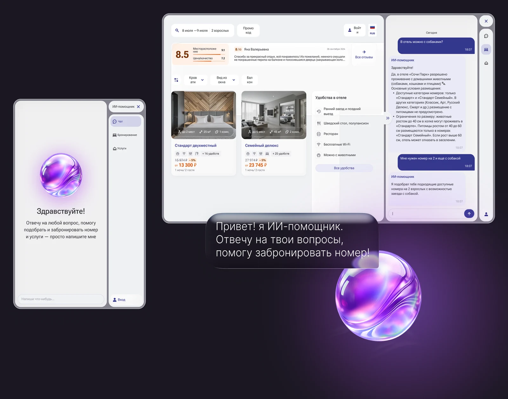

Жанна Поломкина
Жанна Поломкина
01· B2C · ИИ
MVP запуск ИИ-помощника
Результат
- Конверсия +6%
- Средний чек +10%
Исследование — анализ болей пользователей и JTBD для выявления проблем, CJM, User Flow
Discovery — юзабилити-тестирование прототипов
Проектирование — продукта с нуля совместно с ML-командой